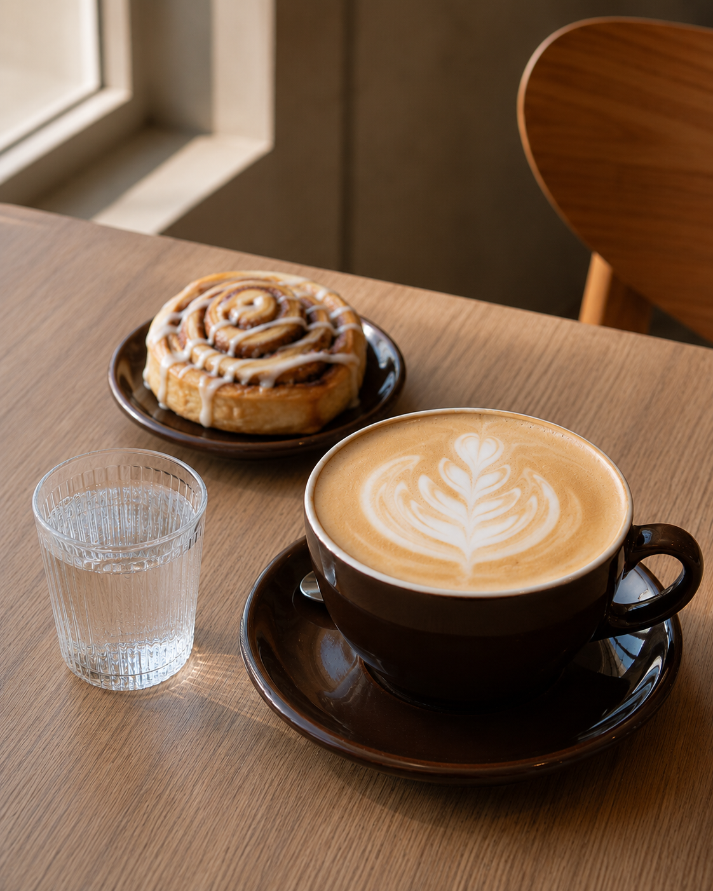
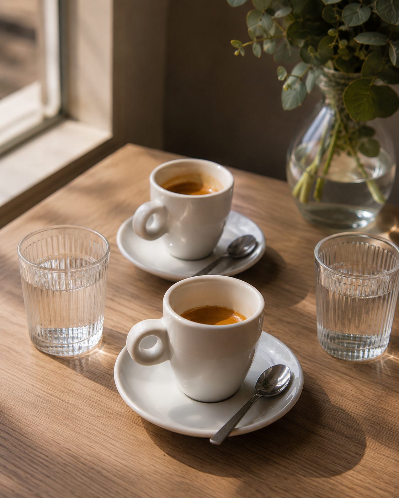
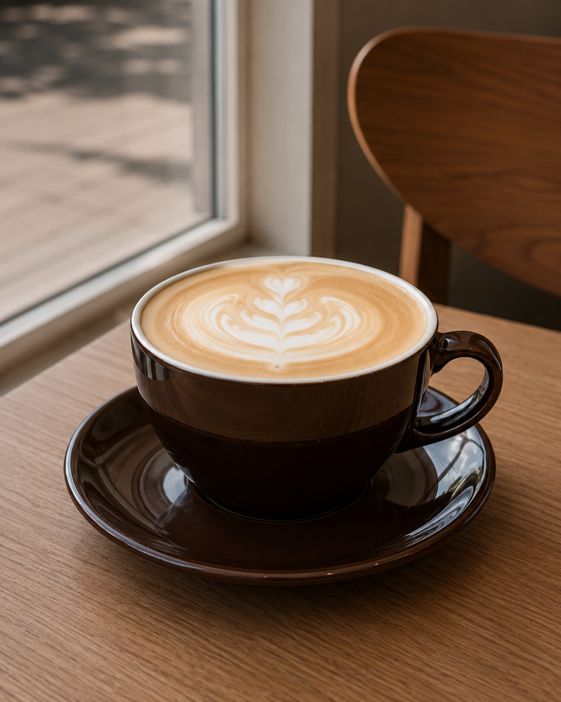
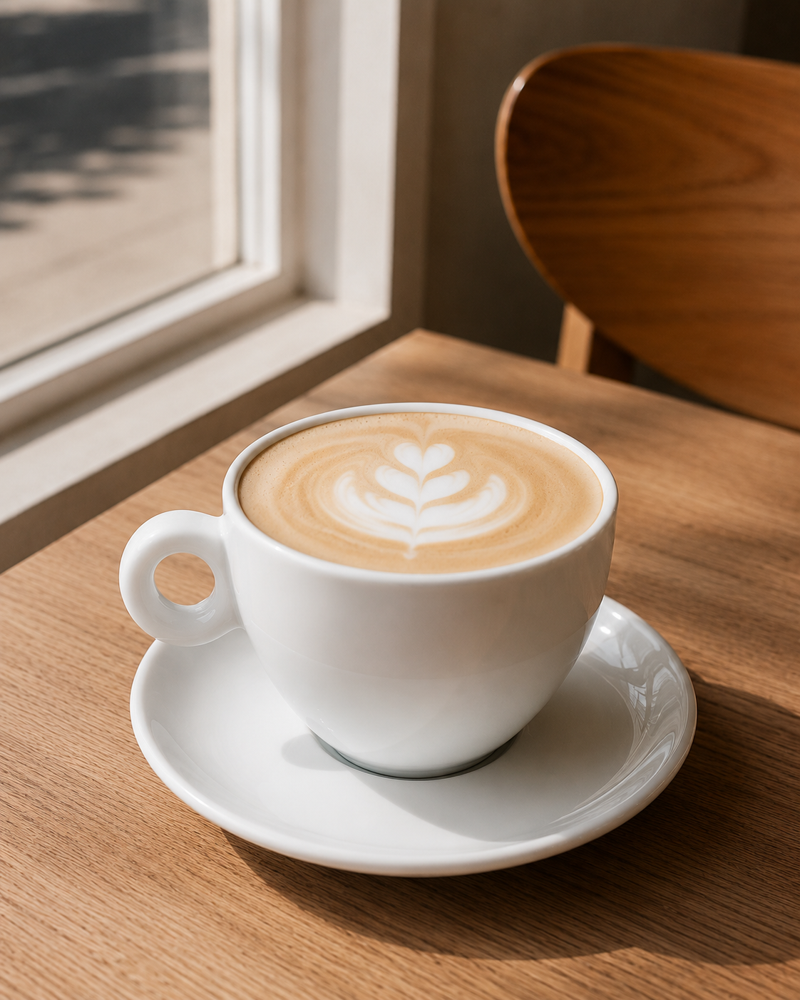
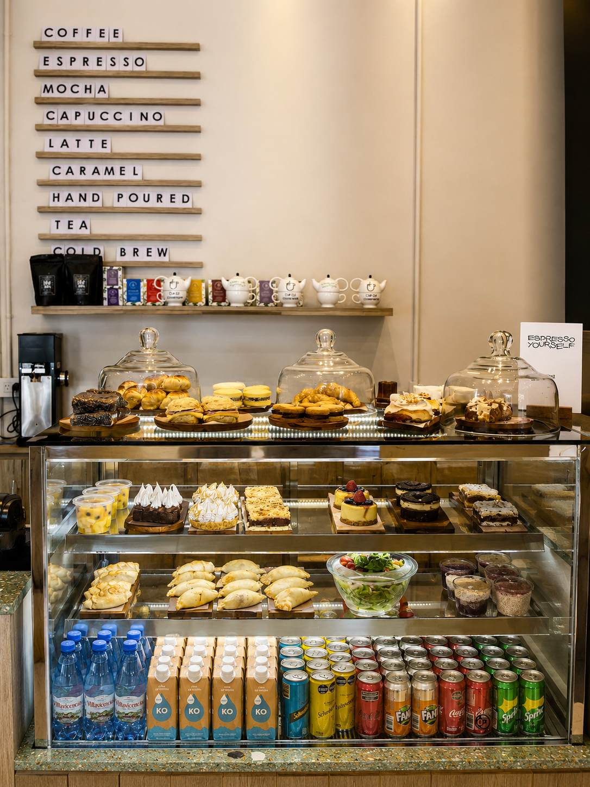
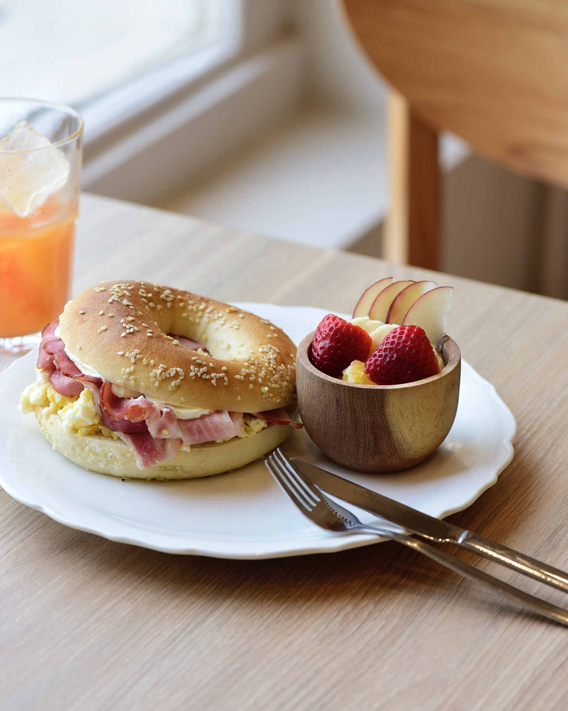

Nuestra carta
Servimos el café a la temperatura justa para que sientas lo mejor de sus notas. Si lo preferís bien caliente o frío con hielo, avisá en la barra al hacer tu pedido. Podés elegir tu tipo de leche: entera, descremada, deslactosada o de almendras, sin costo extra.

Cafetería de especialidad
Pastelería
Siempre hay algo diferente para probar: preguntá por la pastelería del día en la barra.
Comida
Bebidas
Ver la carta completaNuestra carta en imágenes




